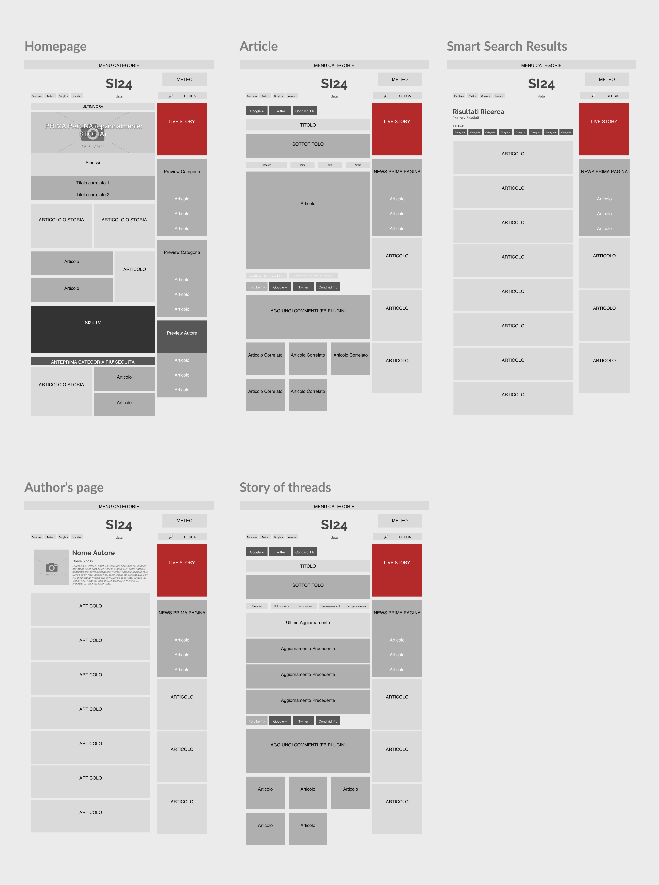

THE CHALLENGE
Si24 is a a national newspaper established in 2013 in Palermo that has met a fast-paced growth during its first years, with a tons of reader that ensured iy in the Italian top 10.
At the beginning of November 2017, Anteria was asked to provide a new website, SEO, social strategy and a new visual appeal to neanche their brand identity.
Hereafter, the design process that has been put on to achieve the final result.
RESEARCH
Our concept has started from the analysis of the information media field, looking for competitors and inspirations.
The online-newspaper, market is known to be very broad and competitive.
Therefore, we’ve been dividing our research according to 3 criteria:
We adopt Fanpage.com as best competitor for their good ui/ux, their positive growth over time and as well as si 24.it is an online “only” journal.
MVP CONSIDERATION
PROS
OGP WISHLIST
CONCEPT

Building the UI